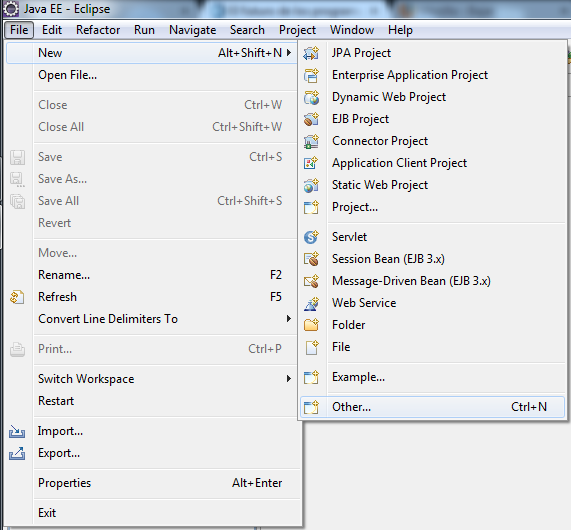
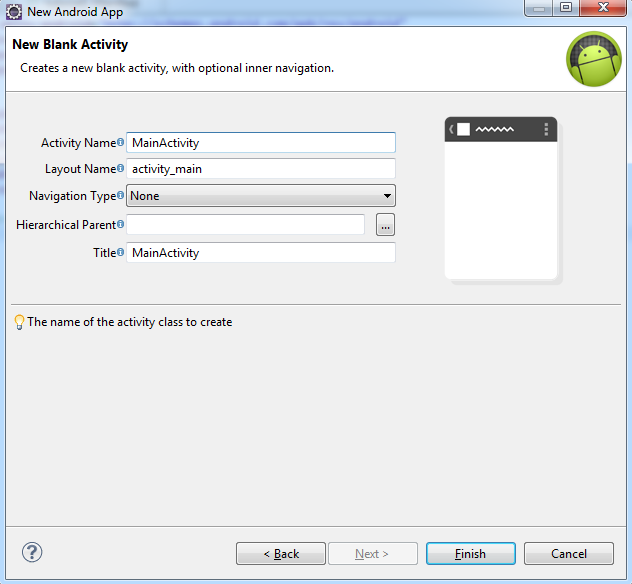

Una vez instalado el Eclipse con el SDK
de Android y la versión de Android, debemos ir al siguiente
menú del Eclipse “File->New->Other” y elegir
la opción “Android->Android Aplication Proyect”,
luego escogeremos las opciones de nuestro proyecto como el nombre de
la aplicación la cual se llamará tutorial1, si queremos
también cambiamos el nombre del proyecto y del package
(nosotros lo dejaremos tal cual), en la opción Build SDK la
versión del SDK en la que desarrollaremos y la versión
mínima del SDK en las que escogeremos las versiones 4.1
(API16) y 2.2 (API 8) respectivamente (luego explicaremos esto). Lo
demás lo dejaremos intacto así que apretaremos “Next”
hasta finalizar.


Al realizar estos pasos se creara nuestro proyecto vacío, pero antes de comenzar a programa debemos entender la estructura de nuestro proyecto.
Estructura de un proyecto Android
Carpeta /src/
Contiene todo el código fuente de la aplicación, código de la interfaz gráfica, clases auxiliares, etc. Inicialmente, Eclipse creará por nosotros el código básico de la pantalla (Activity) principal de la aplicación, siempre bajo la estructura del paquete java definido.
Carpeta /res/
Contiene todos los ficheros de recursos necesarios para el proyecto: imágenes, vídeos, cadenas de texto, etc. Los diferentes tipos de recursos de deberán distribuir en carpetas, las más importantes son las siguientes:
/res/drawable/. Contienen las imágenes de la aplicación. Se puede dividir en /drawable-ldpi, /drawable-mdpi, /drawable-hdpi y /drawable-xhdpi para utilizar diferentes recursos dependiendo de la resolución del dispositivo.
/res/layout/. Contienen los ficheros de definición de las diferentes pantallas de la interfaz gráfica.
/res/values/. Contiene otros recursos de la aplicación como por ejemplo cadenas de texto (strings.xml), estilos (styles.xml), colores (colors.xml), etc.
Carpeta /gen
En esta carpeta se generan o actualizan algunos archivos automáticamente por Eclipse cada vez que compilamos nuestro proyecto, no debemos manipular estos archivos. El archivo más importante es el “R.java” que contiene las ID de todas los recursos que creemos en nuestro proyecto, es decir que si modificamos manualmente este archivo es probable que nuestro proyecto no compile.
Carpeta /assets/
Contienes los archivos adicionales que queramos incluir en nuestro proyecto. Por lo general podemos copiar archivos xml, bases de datos, videos, etc. Para que nuestro proyecto pueda leerlos o copiarlos en la memoria interna del proyecto. Para acceder a estos archivos en necesario conocer la ruta y el nombre del archivo dentro de la carpeta assets (es decir, no se creará una ID en la clase R).
Carpeta /bin
En esta carpeta se generaran algunos archivos propios de la aplicación, no debemos tocarla.
Carpeta /libs
En esta carpeta se guardan las librerías auxiliares que vamos a utilizar, por defecto incluye la librería android-support-v4.jar que permite utilizar las características de Android 4.x en dispositivos con Android 2.x aun que naturalmente tiene sus limitaciones y por eso utilizaremos directamente la versión 4.2 de Android.

Fichero AndroidManifest.xml
Es un archivo xml que contiene los aspectos principales de la aplicación, como por ejemplo su identificación (nombre, versión, icono, etc.), las actividades o los permisos necesarios. Este archivo de puede editar ya sea por código o por el editor gráfico, puede parecer ser más fácil utilizar el editor gráfico pero en realidad es mucho más sencillo manipularlo por código.